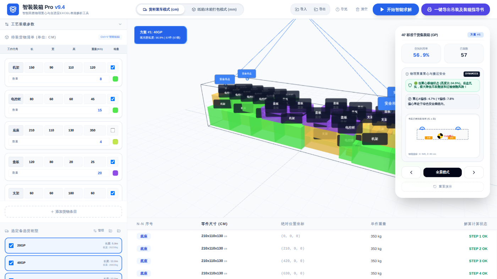
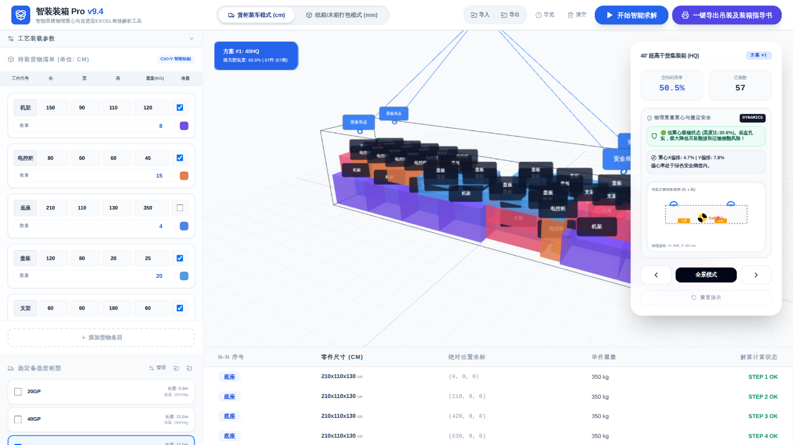
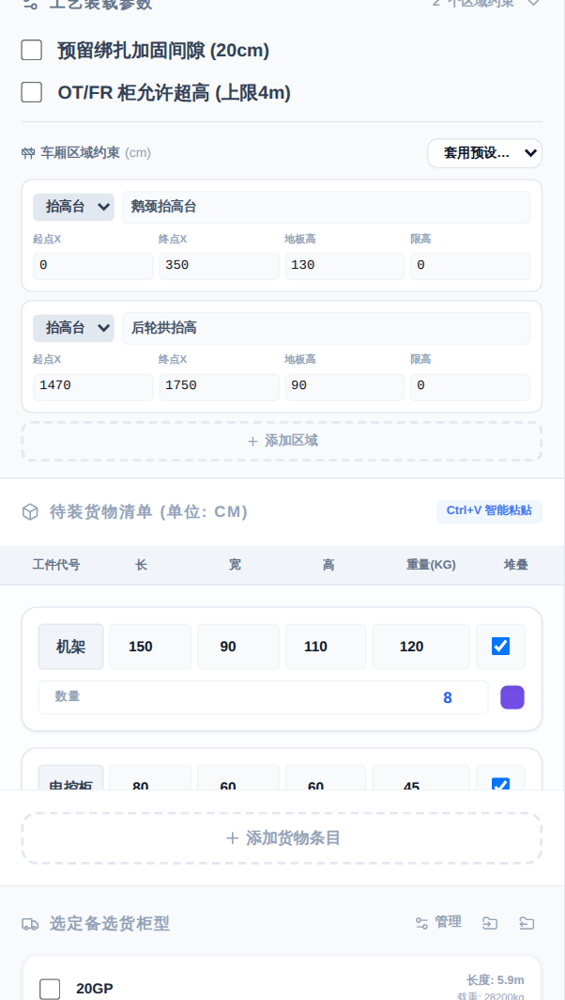
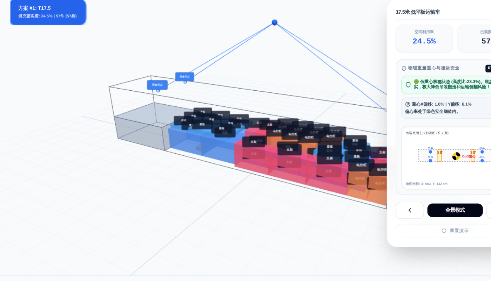
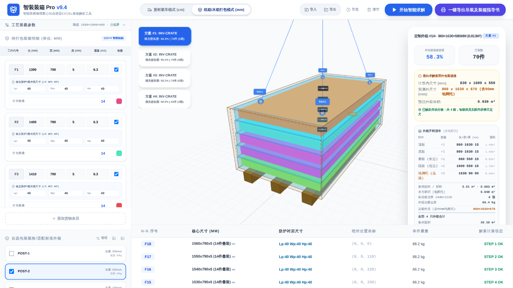
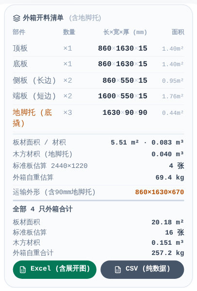
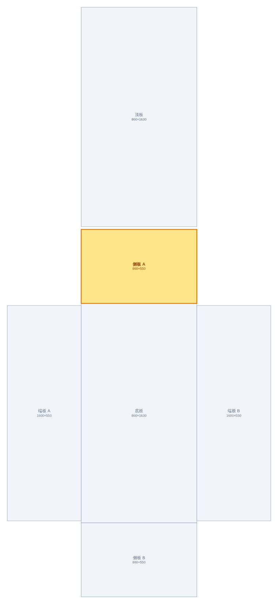
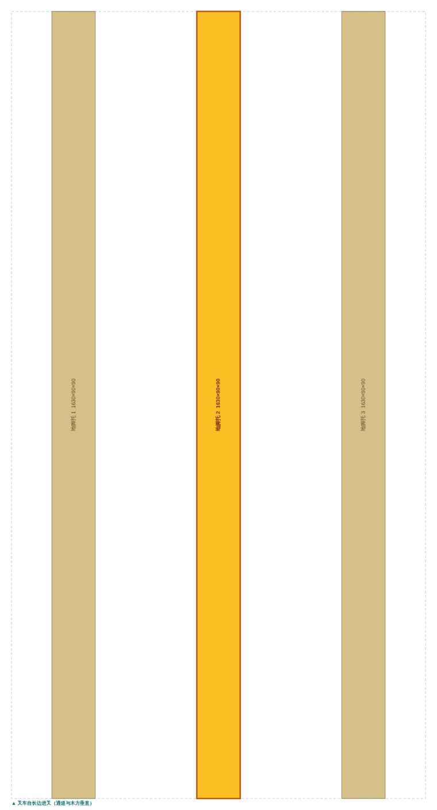
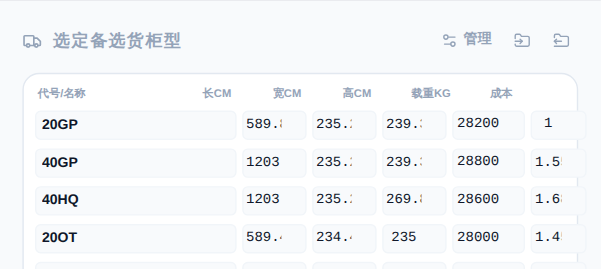

01它解决什么问题
同一份货物清单，两个方向的问题，一个工具。
货柜装车模式解决“货已定，容器已定，怎么装得下”：把货物排进已有的集装箱或货车，比选用哪种柜型最划算。单位 cm。
纸箱/木箱打包模式解决反过来的问题——“货已定，箱子做多大”：为货物反向求解出一只尽量小的外包装箱，并直接给出木板的下料尺寸。单位 mm。
两种模式共用同一份货物清单，切换时尺寸自动在 cm 与 mm 之间换算，不会丢数据。

第一次打开时会弹出功能导览，逐步指出各区域的用途。看过一次后不再自动弹出；随时可以点顶部的「导览」重看。
02五分钟上手
- 选模式——顶部切换「货柜装车」或「纸箱/木箱打包」。
- 录货物——从 Excel 复制整列，在页面上按 Ctrl+V。
- 设限值——展开「工艺装载参数」，设最大长宽高、防护层厚度、堆叠策略。折叠状态下右侧也能看到当前限值。
- 选规格——左下勾选备选柜型/箱型，可多选让系统比选。
- 开始求解——点蓝色按钮，等进度环走完。
求解完成后，中部出现方案卡片和三维图，右栏出现推荐规格、开料清单与重心提示，底部出现逐件明细表。
03录入货物
逐条添加当然可以，但从 Excel 直接粘贴要快得多。
智能粘贴
复制 Excel 里的若干列，在页面任意位置按 Ctrl+V。解析引擎会先在每一行里找出尺寸列，再据此推断左右各列的含义：
| 列位置 | 识别为 | 示例 |
|---|---|---|
| 尺寸列前一列 | 工件代号 | F9-1 |
| 尺寸列 | 长×宽×高 | 1131×80×80 或 1131*80*80 |
| 尺寸列后一列 | 单件重量 kg | 12.5 |
| 再后一列 | 数量 | 18 |
| 再后一列 | 可否堆叠 | 否 / N / 0 视为不可堆叠 |
也支持传统五列式：长 | 宽 | 高 | 重量 | 数量。分隔符可以是制表符或逗号。
如果清单里已经有数据，粘贴后会弹出选择条。选替换清空重来，选追加并入现有清单。不选的话 6 秒后默认追加——所以如果发现件数比预期多，多半是之前的演示数据没清掉。
防护层与打包模式
打包模式下每件货物可以设独立的防护层厚度 Lp / Wp / Hp（长/宽/高三个方向的缓冲余量），也可以勾选「统一全局尺寸」一次设定。
防护计算应用模式决定同规格件怎么合并：
- 每个——每件独立包裹，各自加一圈防护层。件数多时箱子会大不少。
- 每类——同规格件先叠成一摞再整体包一层防护。这是省体积最有效的一项，薄板类尤其明显。
04案例一 · 装柜比选
五种零件、57 件、4.1 吨，同时勾选 20GP / 40GP / 40HQ 让系统比选。
混合零件装柜，系统自己挑柜型
| 代号 | 长×宽×高 (cm) | 数量 | 单重 kg | 可堆叠 |
|---|---|---|---|---|
| 机架 | 150×90×110 | 8 | 120 | 是 |
| 电控柜 | 80×60×60 | 15 | 45 | 是 |
| 底座 | 210×110×130 | 4 | 350 | 否 |
| 盖板 | 120×80×20 | 20 | 25 | 是 |
| 支架 | 60×60×180 | 10 | 60 | 是 |
- 选中柜型
- 40GP
- 装载单元
- 1 柜
- 空间利用率
- 56.9%
- 装载件数
- 57 / 57
- 总重
- 4135 kg

系统选了 40GP 而不是更高的 40HQ——两者都装得下，但 40GP 的成本指数更低（1.55 vs 1.68）。比选规则是：能一次装完的柜型优先，其中取成本最低者；都装不完时才转为「装得最多」，装载量相当（差 2% 以内）时仍比成本。
利用率 56.9% 看着不高，但这是正常的——异形件之间的空隙无法消除。要提高只能减少规格种类或允许更多件堆叠。
05案例二 · 高低平板车
17.5 米低平板车不是一个规整的长方体：鹅颈处地板抬高，后轮拱也抬高。区域约束就是描述这件事。
三种区域类型
| 类型 | 含义 | 典型用途 | 需填 |
|---|---|---|---|
| 禁装区 | 该段完全不可放货 | 轮拱、随车设备位 | 起点X / 终点X |
| 抬高台 | 地板抬高，货必须落在台面上 | 鹅颈、后轮拱 | + 地板高 |
| 限高区 | 该段货顶不得超过某高度 | 鹅颈槽、风阻罩下方 | + 限高 |
区域沿车长方向分段，起点/终点用车头端起算的 X 坐标。可以直接套用预设：高低平板车、轮拱禁装、前部限高。
17.5m 低平板车 + 鹅颈抬高台
| 区域 | 类型 | X 范围 (cm) | 地板高 (cm) |
|---|---|---|---|
| 鹅颈抬高台 | 抬高台 | 0 – 350 | 130 |
| 后轮拱抬高 | 抬高台 | 1470 – 1750 | 90 |


- 装载件数
- 57 / 57
- 落在台面上
- 6 件
- 违规摆放
- 0
只有 6 件落在抬高台上——这是对的。求解器优先把货放在低板区（重心更低、净空更高），低板装满了才用鹅颈台。这与实际装车顺序一致。
利用率数字在有区域约束时会偏低（本例 24.5%），因为分母是车厢的整体长方体体积，而抬高台占掉的空间本来就装不了货。看装载件数和是否有未装载件更有意义。
06案例三 · 薄板分箱
252 张薄板，限值 1500×1800×600 装不下——系统自动开出四只箱，尾箱按余料定尺。
18 种薄板 × 14 张，最小CBM 策略
- 规格种类
- 18
- 每种数量
- 14 张
- 板厚
- 5 mm
- 幅面范围
- 1390–1560×790
- 防护层
- 40 mm
关键设置：防护应用 = 每类（同规格 14 张先叠成一摞）、策略 = 最小CBM优化、限值 1500×1800×600、超限自动分箱 = 开。

| 箱号 | 外形 长×宽×高 (mm) | 体积 m³ | 装载 | 密实度 |
|---|---|---|---|---|
| #1 | 860×1630×580 | 0.813 | 70 张 | 58.3% |
| #2 | 860×1580×580 | 0.788 | 70 张 | 58.2% |
| #3 | 860×1530×580 | 0.763 | 70 张 | 58.1% |
| #4 | 860×1480×360 | 0.458 | 42 张 | 58.5% |
尾箱明显更小——0.458 m³ 对比首箱 0.813 m³。每只箱子都是按它实际装了什么反向定尺的，余料少就得小箱，不会为了统一而做四只一样大的箱子。
合计运输体积 3.304 m³（含 90mm 地脚托），用板 20.18 m²、约 16 张标准板，外箱自重约 257 kg。
同样这批货，关掉分箱后只出 1 只箱，13 个规格类装不下，全部进入未装载清单。分箱不是可有可无的开关——限值卡住时它决定货物是被装走还是被丢下。
四种堆叠策略怎么选
| 策略 | 行为 | 适合 |
|---|---|---|
| 智能安全低重心 | 先铺满底面再往上堆 | 重货、需要低重心的场合 |
| 截面最紧凑 | 优先填满宽高，控制长度 | 长件、需要控制箱长 |
| 竖向叠装 | 强制往高处叠，底面积最小 | 薄板、同型面积件 |
| 最小CBM优化 | 多策略 + 多种分组反复比选，取总体积最小 | 拿不准时的默认选择 |
最小CBM 会尝试按体积、按厚度（薄板 vs 厚件）、按长径比（细长件 vs 方块件）等多种方式分组，评估分成两组装是否比一整箱更省，只有省下 4% 以上才采纳分组方案。
07开料清单
打包模式独有。给出六面板材的精确下料尺寸、地脚托规格与用板估算，可导出带展开图的 Excel。
装配约定
清单按一种明确的装配方式计算，侧板包端板、顶底盖四壁：
| 部件 | 数量 | 下料尺寸 | 说明 |
|---|---|---|---|
| 顶板 / 底板 | 各 1 | L × W | 盖住四壁上下口 |
| 侧板（长边） | 2 | L × (H−2t) | 夹在顶底之间 |
| 端板（短边） | 2 | (W−2t) × (H−2t) | 夹在两侧板之间 |
| 地脚托（底撬） | 3 | W × 90 × 90 | 沿宽度铺，沿长度均布 |
其中 t 是板厚，L/W/H 是外箱外形尺寸。这套拼法正好闭合出净内腔 (L−2t)×(W−2t)×(H−2t)，软件会自动校验；万一对不上会在面板里红字告警。
因为叉车是从长边进叉的。木方沿宽度铺、沿长度均布，叉臂通道正好与木方垂直，才插得进去。这也决定了地脚托的下料长度是 W 而不是 L。

Excel 导出：带展开图
点「Excel (含展开图)」导出的工作簿里，每只箱一个工作表，顺序是：六面展开图总览 → 逐片木板（该片在图上高亮）→ 地脚托单列 → 本箱小计，最后一个「汇总」表合计全部箱体。


另有「CSV (纯数据)」导出，不带图，适合直接导进 ERP 或车间报表。CSV 带 UTF-8 BOM，Excel 打开中文不乱码。
08重心与吊装
解算完会同时算出三维重心，并据此给出叉车位与四个吊点。
- 重心球——三维图中的阴阳球，下方有垂线落到地面，标出重心在底面的投影位置。
- 叉车位——两条琥珀色叉臂，从长边进叉。位置按重心对称展开，越界时会整体平移回箱内，不会给出叉不到的位置。
- 吊点——四个吊环，同样保证落在箱体轮廓内。
两个安全判据
| 指标 | 算法 | 警戒线 |
|---|---|---|
| 重心高度比 | 重心离地高度 ÷ 总高（含 90mm 地脚托） | <45% 稳 · 45–55% 中等 · >55% 警告 |
| 偏心率 | 重心偏离几何中心的距离 ÷ 对应边长 | X 或 Y 任一 >10% 判为严重偏心 |
严重偏心时会提示起吊前确保挂索对称；高重心时会建议在底盘加配重或降低堆叠高度。
09规格库
内置的柜型、车型、纸箱规格都可以改，也能加自己的。

成本指数是多柜比选的依据，以 20GP = 1.00 为基准。填你自己的实际运价比例，系统就会按你的成本结构挑柜——而不是一律上大柜。
- 修改会自动存在本浏览器，刷新不丢。
- 改代号时勾选状态会跟随，不会掉勾。
- 规格库可单独导入/导出成 JSON，方便在同事之间统一口径。
10导出与存档
| 导出项 | 格式 | 内容 |
|---|---|---|
| 装箱指导书 | HTML | 多柜/多箱汇总、逐件装载步骤图、重心与吊装安全提示，可直接打印 |
| 开料清单 | XLSX | 每箱一表：展开图 + 逐片高亮 + 地脚托 + 小计，末尾汇总表 |
| 开料清单 | CSV | 纯数据，带 UTF-8 BOM |
| 整体配置 | JSON | 货物清单、区域约束、规格库、全部参数 |
| 规格库 | JSON | 仅柜型/车型/箱型规格 |
导出后归档，下次导入即可完整还原：清单、限值、策略、区域、规格库、勾选状态。交接和复算都靠它。
11参数速查
| 参数 | 所在 | 默认 | 影响 |
|---|---|---|---|
| 外包装壁板厚度 | 打包模式 | 15 mm | 决定净内腔与板材下料尺寸 |
| 最大长/宽/高 | 打包模式 | 6000/2200/2200 | 超出即触发分箱 |
| 超限自动分箱 | 打包模式 | 开 | 关掉则超限货物进未装载清单 |
| 防护层 Lp/Wp/Hp | 打包模式 | 40 mm | 每件三向缓冲余量 |
| 防护应用模式 | 打包模式 | 每个 | 「每类」把同规格件先叠再包，最省体积 |
| 堆叠排布策略 | 两种模式 | 低重心 | 见 §06 策略对照表 |
| 预留绑扎间隙 | 货柜模式 | 关 | 开启后四周留 20cm |
| OT/FR 允许超高 | 货柜模式 | 关 | 开顶/框架柜放宽到 4m |
| 车厢区域约束 | 货柜模式 | 无 | 禁装/抬高/限高分段 |
| 地脚托高度 | 打包模式 | 90 mm | 固定值，计入运输外形与重心高度 |
12常见问题
为什么明明货很多，却只出一只箱、不分箱？
分箱只在限值真的被卡住时才触发。默认最大长度是 6000mm，一般的货根本碰不到，自然就不分箱。
把「工艺装载参数」折叠条右侧的限值调小（比如改成 2400×2200×1200），或者展开面板确认「超限自动分箱」是开的。求解后右栏会明确写出原因：「单箱方案 · 未触及限值 6000×2200×2200，如需分箱请调小限值」。
件数对不上，比我表格里的多
多半是粘贴时选了「追加」，把之前的演示数据并进来了。粘贴时会弹选择条，选替换即可；或先点顶部「清空」。
另外注意方案卡片上的数字是件数（类数）两个口径：70件 (5类) 表示 5 个规格类、合计 70 张。
装载率只有 50% 多，是不是没算好？
不是。装载率 = 货物净体积 ÷ 容器内腔体积。异形件之间必然有空隙，混装 50–70% 是正常范围。
有区域约束时会更低（案例二只有 24.5%），因为抬高台占掉的空间算进了分母但本来就装不了货。更该关注的是「有没有未装载件」。
真要提高：减少规格种类、允许更多件堆叠、打包模式下改用「每类」防护模式。
薄板叠不起来，箱子铺得又平又大
换成「竖向叠装」策略。默认的低重心策略会优先把货铺满底面再往上堆，对薄板来说恰好相反——应该往高处叠，把底面积压到最小。
同时把「防护计算应用模式」设为「每类」，让同规格的板先叠成一摞。
开料清单能直接给车间下料吗？
可以。清单给的是精确下料尺寸，已经按「侧板包端板、顶底盖四壁」的装配关系扣减过板厚，拼起来正好是解算出的净内腔，软件每次都会自动校验闭合性。
建议导出 Excel 版给师傅——每片木板在展开图上高亮，不容易拿错。用板张数是按 2440×1220 直裁估算的，实际排版可能更省。
装柜模式为什么没有开料清单？
集装箱和货车是既有的运输工具，不是要开料制作的东西，没有板材可下。开料清单只在打包模式出现，因为那时系统是在设计一只木箱。
能离线用吗？会不会传数据出去？
可以完全离线。整个工具是单个 HTML 文件，三维引擎、Excel 引擎、图标、样式全部内嵌，运行时零外部网络请求。双击就能开，数据不出本机。
规格库和「导览已看过」标记存在浏览器本地，换浏览器或清了站点数据会恢复默认。